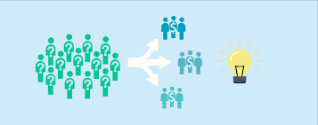

Arvato Customer Segmentation Project Report
by
Muhammad Ali
Posted on April 18, 2020

Project Overview
Domain Background
Arvato is a services company that provides financial services, Information Technology (IT) services and Supply Chain
Management (SCM) solutions for business customers on a global scale. It develops and implements innovative
solutions with a focus on automation and data analytics. Arvato’s customers come from a wide range of industries
such as insurance companies, e-commerce, energy providers, IT and Internet providers [1]. Also, Arvato is wholly
owned by Bertelsmann, which is a media, services and education company [2].
Arvato is helping its customers get valuable insights from data in order to make business decisions. Customer centric
marketing is one of the growing fields. Identifying hidden patterns and customer behavior from the data is providing
valuable insights for the companies operating in customer centric marketing. Data Science and Machine Learning are
immensely used now a days to fulfil business goals and to satisfy customers.
In this project, Arvato is helping a Mail-order company, which sells organic products in Germany, to understand its
customers segments in order to identify next probable customers. The existing customer data and the demographic
data of population in Germany are to be studied to understand different customer segments, and then building a system
to make predictions on whether a person will be a customer or not based on the demographic data.
Dataset and Inputs
There are four data files associated with this project:
- Udacity_AZDIAS_052018.csv: Demographics data for the general population of Germany; 891 211 persons
(rows) x 366 features (columns).
-
Udacity_CUSTOMERS_052018.csv: Demographics data for customers of a mail-order company; 191 652
persons (rows) x 369 features (columns).
-
• Udacity_MAILOUT_052018_TRAIN.csv: Demographics data for individuals who were targets of a marketing
campaign; 42 982 persons (rows) x 367 (columns).
-
Udacity_MAILOUT_052018_TEST.csv: Demographics data for individuals who were targets of a marketing
campaign; 42 833 persons (rows) x 366 (columns).
Additionally, 2 metadata files have been provided to give attribute information:
- DIAS Information Levels - Attributes 2017.xlsx: top-level list of attributes and descriptions, organized by
informational category
- DIAS Attributes - Values 2017.xlsx: detailed mapping of data values for each feature in alphabetical order
All the files associated with the project have been provided by Arvato in the context of Machine Learning Nanodegree Program for analysis and customer segmentation purposes. The four csv files are the demographic data files, in which each row represents demographics of a single person. Each row also includes additional information about their household, building and neighborhood in addition to their demographics. Customers data has three additional columns indicating their specifics with regards to the mail order company. The Train and Test data have been provided to evaluate supervised learning algorithms.
Solution Statement
In the first part of the project, the task is to identify any customer segments present in the provided dataset and Match these segments with the segments of population present in the general population dataset.
- In the first step, the dataset will be explored to examine if there are any missing values or mis recorded values in the data and fix them. Also, any categorical features need to be re encoded into numerical features with the help of Label encoders. Finally, the data will be scaled in order to ensure no single feature will have higher weights the later steps.
- The second step is to identify the minimum number of features that would be sufficient to explain the dataset. Since there are 366 features that represent a single person and not all the features will be important in forming the segments. A dimensionality reduction technique like Principal Component Analysis (PCA) can be used here to identify minimum number of features which explain the variation in the dataset.
- The third step is to segment the general population and the customers into different segments based on the selected features with the help of unsupervised learning algorithm. K-means clustering is a good choice for this step as this algorithm tries to assign each data point to a cluster based on the distance from a cluster center.
In the second part of the project, the task is to predict whether the mail order company can acquire a customer.
- In the first step, the data is pre-processed (the first two steps of the first part will be done again on train and test data).
- In the second step a supervised learning algorithm will be trained and evaluated on the pre-processed training data.
- In the last step, the trained model will be used to make predictions on the test data provided
- Proposed algorithms for supervised learning.
- Logistic Regression – A simple binary classification algorithm
- Decision Tree Classifier – A tree-based algorithm which uses rule-based approach for classification
- Random Forest Classifier and XG Boost Classifier can also be used since they are derived from the decision trees algorithm